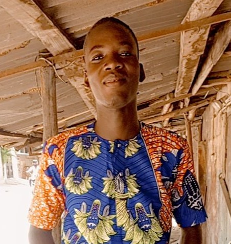

CURRICULUM VITAE
Etat civil
Nom : TOBOSSI
Prénom : Gbetoho Sédjro Martinien
Mail : gbetohosedjro@gmail.com
Téléphone : +22960084085
Adresse : Cotonou, Vêdoko, Gbénonkpo

Prénom : Gbetoho Sédjro Martinien
Mail : gbetohosedjro@gmail.com
Téléphone : +22960084085
Adresse : Cotonou, Vêdoko, Gbénonkpo
Pacours Académique
2025 : Deuxième année en Systhème Indistruel à GASA - Formation
2024 : Première année en Systhème Indistruel à GASA - Formation
2023 : Baccalauréat série F3 à CPET Saint Nelchael
2023 : Diplôme du Technicien (DT) série EL à Saint Nelchael
2022 : Certificat d'Amplitude Professionnelle (CAP) à CPET Saint Nelchaël
2020 : Brevet d'ETUDE du Premier Cycle (BEPC) à CEG DJEFFA
2016 : Certificat d'Etude Primaire (CEP) à Saint Joseph de Copertino
2024 : Première année en Systhème Indistruel à GASA - Formation
2023 : Baccalauréat série F3 à CPET Saint Nelchael
2023 : Diplôme du Technicien (DT) série EL à Saint Nelchael
2022 : Certificat d'Amplitude Professionnelle (CAP) à CPET Saint Nelchaël
2020 : Brevet d'ETUDE du Premier Cycle (BEPC) à CEG DJEFFA
2016 : Certificat d'Etude Primaire (CEP) à Saint Joseph de Copertino
Capacité Linguistiques et Atouts
Maitrise du Français à l'écrit et à l'oral
Maitrise partielle des logiciel word ; PowerPoint
Maitrise partielle de l'anglais; Excel
Maitrise de certaine installation électrique
Maitrise partielle des logiciel word ; PowerPoint
Maitrise partielle de l'anglais; Excel
Maitrise de certaine installation électrique
Loisir
Webtoon
manga
manga